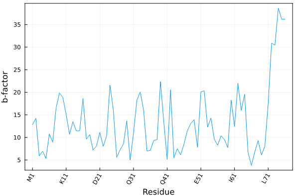

Auxiliary functions
Get a protein sequence
To obtain a list of the residue names of the protein with three- and one-letter codes, use
julia> using PDBTools
julia> pdb = read_pdb(PDBTools.SMALLPDB);
julia> getseq(pdb)
3-element Vector{String}:
"A"
"C"
"D"Use getseq(atoms,code=2) to get the sequence as three-letter residue codes, or code=3 to get full natural-aminoacid names, like "Alanine", "Proline", etc:
julia> using PDBTools
julia> pdb = read_pdb(PDBTools.SMALLPDB);
julia> getseq(pdb; code=2)
3-element Vector{String}:
"ALA"
"CYS"
"ASP"
julia> getseq(pdb; code=3)
3-element Vector{String}:
"Alanine"
"Cysteine"
"Aspartic acid"PDBTools.getseq — Function
getseq(AbstractVector{<:Atom} or filename; selection, code)Returns the sequence of amino acids from the vector of atoms or file name. Selections may be applied. Code defines if the output will be a one-letter, three-letter or full-residue name array.
Example
julia> using PDBTools
julia> protein = read_pdb(PDBTools.TESTPDB);
julia> getseq(protein, "residue < 3")
2-element Vector{String}:
"A"
"C"
julia> getseq(protein, "residue < 3"; code=2)
2-element Vector{String}:
"ALA"
"CYS"
julia> getseq(protein, "residue < 3"; code=3)
2-element Vector{String}:
"Alanine"
"Cysteine"
PDBTools.Sequence — Type
SequenceWrapper for strings, or vectors of chars, strings, or residue names, to dispatch on functions that operate on amino acid sequences.
Example
julia> seq = ["Alanine", "Glutamic acid", "Glycine"];
julia> mass(Sequence(seq))
257.2432
julia> seq = "AEG";
julia> mass(Sequence(seq))
257.2432If there is some non-standard protein residue in the sequence, inform the getseq function by adding a selection:
julia> using PDBTools
julia> atoms = read_pdb(PDBTools.SMALLPDB);
julia> for at in atoms
if resname(at) == "ALA"
at.resname = "NEW"
end
end
julia> getseq(atoms, "protein or resname NEW"; code=2)
3-element Vector{String}:
"NEW"
"CYS"
"ASP"By default the selection will only return the sequence of natural amino acids.
The getseq function can of course be used on an Atom list, accepts selections as the last argument, as well as the reading and writing functions:
julia> using PDBTools
julia> atoms = read_pdb(PDBTools.SMALLPDB);
julia> getseq(atoms, "residue > 1")
2-element Vector{String}:
"C"
"D"Residue tick labels for plots
The residue_ticks function provides a practical way to define tick labels in plots associated to an amino-acid sequence:
residue_ticks(
atoms (or) residues (or) residue iterator;
first=nothing, last=nothing, stride=1, oneletter=true, serial=false,
)The input structure can be provided as a vector of atoms (type Vector{<:Atom}) a residue iterator (obtained by eachresidue(atoms)) or a vector of residues (obtained by collect(eachresidue(atoms))).
The function returns a tuple with residue numbers and residue names for the given atoms, to be used as tick labels in plots.
first and last optional keyword parameters are integers that refer to the residue numbers to be included. The stride option can be used to skip residues and declutter the tick labels.
If oneletter is false, three-letter residue codes are returned. Residues with unknown names will be named X or XXX.
If serial=false, the positions of the ticks will be returned as the serial residue index in the structure. If serial=true, the positions of the ticks are returned as their residue numbers. This difference is important if the residue numbers do not start at 1, and depending on the indexing of the data to be plotted.
PDBTools.residue_ticks — Function
residue_ticks(
atoms (or) residues (or) residue iterator;
first=nothing, last=nothing, stride=1, oneletter=true, serial=false
)Returns a tuple with residue numbers and residue names for the given atoms, to be used as tick labels in plots.
The structure data can be provided a vector of Atoms, a vector of Residues or an eachresidue iterator.
first and last optional keyword parameters are integers that refer to the residue numbers to be included. The stride option can be used to skip residues and declutter the tick labels.
If oneletter is false, three-letter residue codes are returned. Residues with unknown names will be named X or XXX.
If serial=true the sequential residue index will be used as the index of the ticks. If instead serial=false, the positions will be set to the residue numbers.
Examples
julia> using PDBTools
julia> atoms = wget("1LBD", "protein");
julia> residue_ticks(atoms; stride=50) # Vector{<:Atom} as input
(Int32[225, 275, 325, 375, 425], ["S225", "Q275", "L325", "L375", "L425"])
julia> residue_ticks(atoms; first=235, last=240) # first=10
(Int32[235, 236, 237, 238, 239, 240], ["I235", "L236", "E237", "A238", "E239", "L240"])
julia> residue_ticks(eachresidue(atoms); stride=50) # residue iterator as input
(Int32[225, 275, 325, 375, 425], ["S225", "Q275", "L325", "L375", "L425"])
julia> residue_ticks(collect(eachresidue(atoms)); stride=50) # Vector{Residue} as input
(Int32[225, 275, 325, 375, 425], ["S225", "Q275", "L325", "L375", "L425"])
julia> residue_ticks(atoms; first=10, stride=50, serial=true) # using serial=true
(10:50:210, ["R234", "K284", "R334", "S384", "E434"])
The resulting tuple of residue numbers and labels can be used as xticks in Plots.plot, for example.
PDBTools.oneletter — Function
oneletter(residue::Union{AbstractString,Char})Function to return a one-letter residue code from the three letter code or residue name. The function is case-insensitive.
Examples
julia> oneletter("ALA")
"A"
julia> oneletter("Glutamic acid")
"E"
PDBTools.threeletter — Function
threeletter(residue::String; residue_classes=nothing)Function to return the three-letter natural-amino acid or nucleoside residue code from the one-letter code or residue name. The function is case-insensitive.
When retrieving ambiguous codes, protein residue codes will be preferred. Use class=:nucleoside_residues to retrieve only nucleoside data, or data of any other specific class.
Examples
julia> using PDBTools
julia> threeletter("A")
"ALA"
julia> threeletter("Aspartic acid")
"ASP"
julia> threeletter("HSD")
"HIS"
julia> threeletter("G"; residue_classes=:nucleoside_residues)
"GUO"
Example
Here we illustrate how to plot the average temperature factor of each residue of a crystallographic model as function of the residues.
julia> using PDBTools, Plots
julia> atoms = wget("1UBQ", "protein");
julia> residue_ticks(atoms; stride=10) # example of output
([1, 11, 21, 31, 41, 51, 61, 71], ["M1", "K11", "D21", "Q31", "Q41", "E51", "I61", "L71"])
julia> plot(
resnum.(eachresidue(atoms)), # x-axis: residue numbers
[ mean(beta.(res)) for res in eachresidue(atoms) ], # y-axis: average b-factor per residue
xlabel="Residue",
xticks=residue_ticks(atoms; stride=10), # here we define the x-tick labels
ylabel="b-factor",
xrotation=60,
label=nothing, framestyle=:box,
)Produces the following plot:

Alternatively (and sometimes conveniently), the residue ticks can be obtained by providing, instead of the atoms array, the residue iterator or the residue vector, as:
julia> residue_ticks(eachresidue(atoms); stride=10)
([1, 11, 21, 31, 41, 51, 61, 71], ["M1", "K11", "D21", "Q31", "Q41", "E51", "I61", "L71"])
julia> residue_ticks(collect(eachresidue(atoms)); stride=10)
([1, 11, 21, 31, 41, 51, 61, 71], ["M1", "K11", "D21", "Q31", "Q41", "E51", "I61", "L71"])Add hydrogens with OpenBabel
PDBTools.add_hydrogens! — Function
add_hydrogens!(atoms::AbstractVector{<:Atom}; pH=7.0, obabel="obabel", debug=false)Add hydrogens to a PDB file using Open Babel.
Arguments
atoms::AbstractVector{<:Atom}: structure (usually PDB file of a protein) to add hydrogens to.pH: the pH of the solution. Default is 7.0.obabel: path to the obabel executable. Default is "obabel".debug: if true, print the output message from obabel. Default is false.
This function requires the installation of OpenBabel. Please cite the corresponding reference if using it.
Example
julia> using PDBTools
julia> atoms = read_pdb(PDBTools.TESTPDB, "protein and not element H");
julia> add_hydrogens!(atoms)
Vector{Atom{Nothing}} with 1459 atoms with fields:
index name resname chain resnum residue x y z occup beta model segname index_pdb
1 N ALA A 1 1 -9.229 -14.861 -5.481 1.00 0.00 1 - 1
2 CA ALA A 1 1 -8.483 -14.912 -6.726 1.00 0.00 1 - 2
3 CB ALA A 1 1 -9.383 -14.465 -7.880 1.00 0.00 1 - 3
⋮
1457 H THR A 104 208 5.886 -10.722 -7.797 1.00 0.00 1 - 1457
1458 H THR A 104 208 5.871 -10.612 -9.541 1.00 0.00 1 - 1458
1459 H THR A 104 208 6.423 -12.076 -8.762 1.00 0.00 1 - 1459